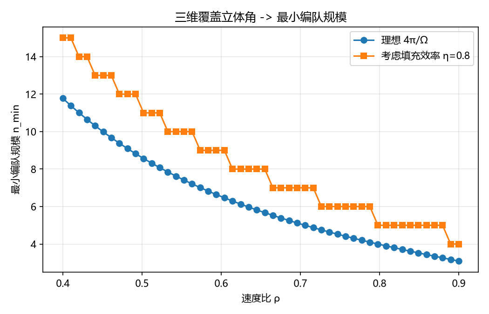
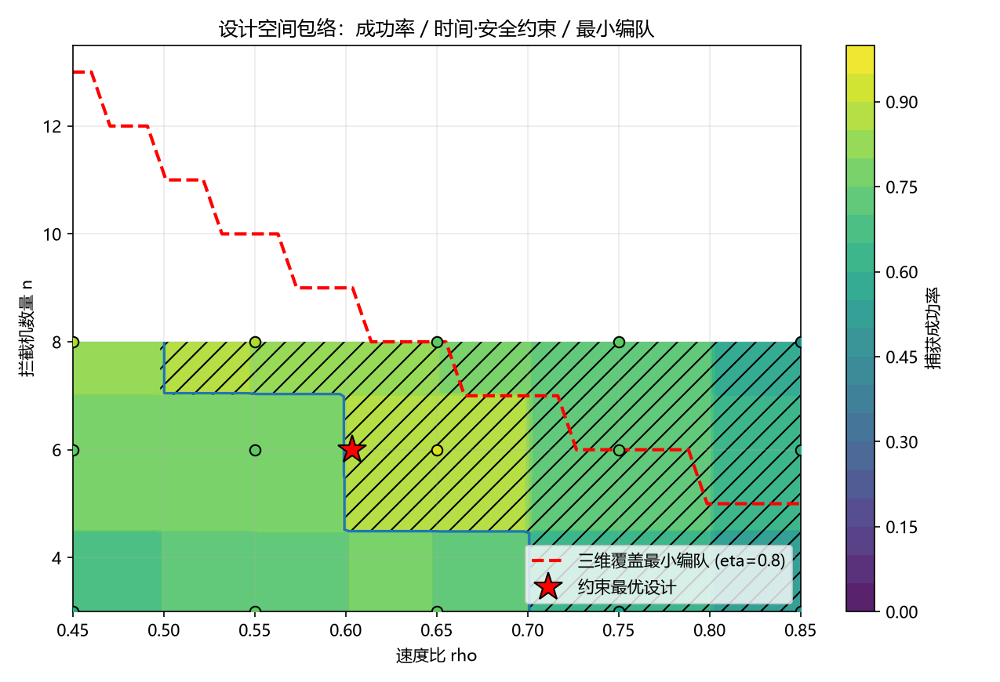
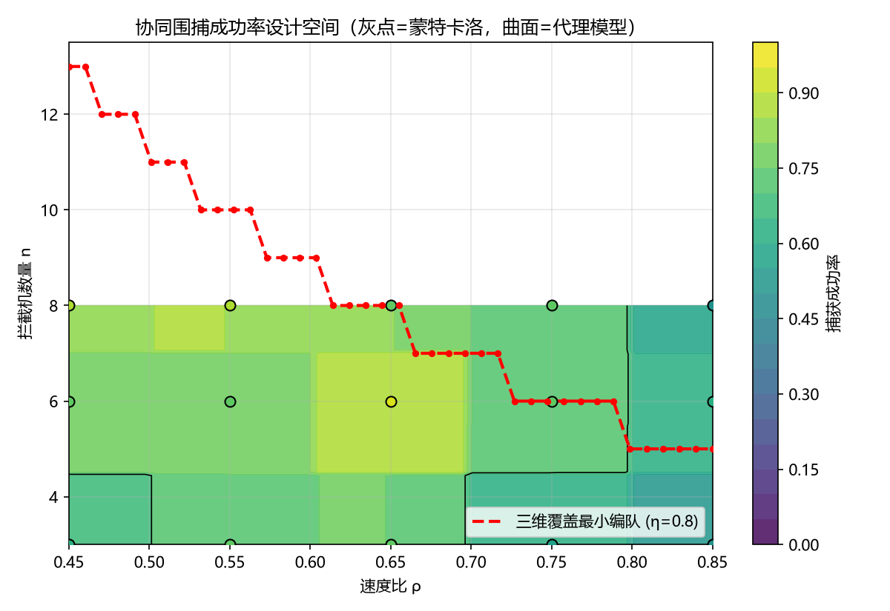
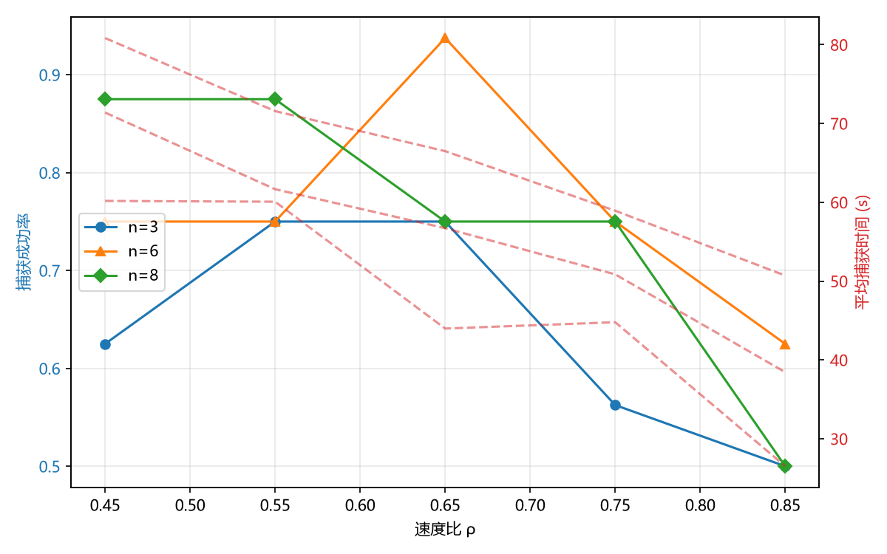
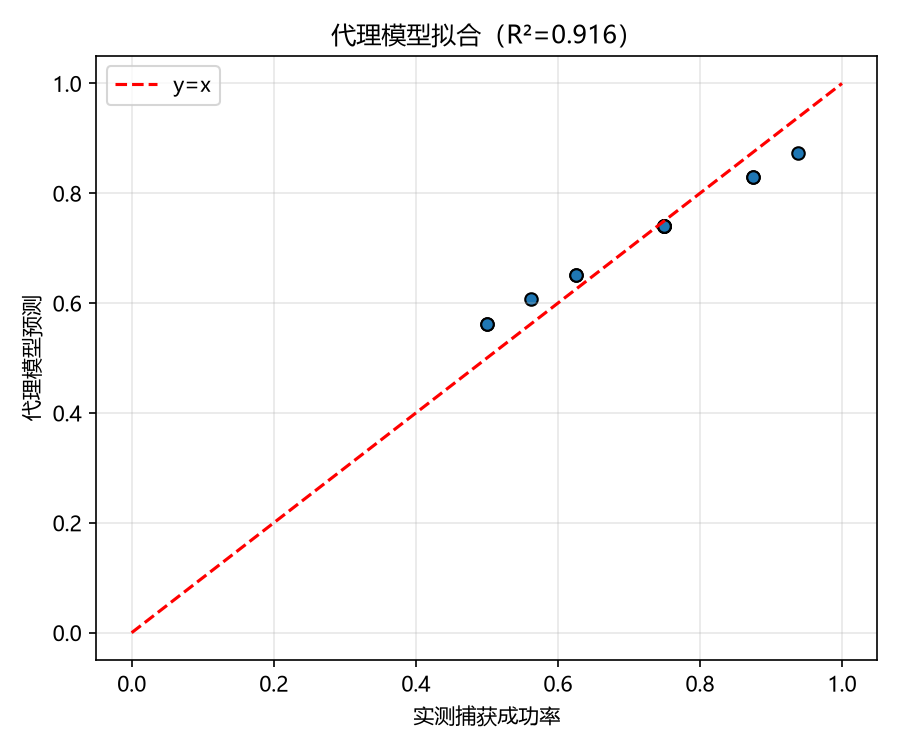

现代低空威胁已由单架无人机上升为百架级智能无人机蜂群。典型"低慢小"目标（约 10 m/s）对末端防空构成现实威胁；受平台成本与载荷约束，单架拦截机速度难以全面占优。
本平台支撑"以数量优势弥补速度劣势"的多机协同围捕方案（方案报告 3.5 节《基于三维覆盖立体角的多拦截机协同围捕制导控制方案》），通过可复现仿真、蒙特卡洛统计、代理模型与参数寻优，回答"几架、多快、什么策略"并给出工程设计建议与性能包络。



针对速度劣势（ρ<1）拦截机，以阿波罗尼斯球几何推导三维覆盖立体角，把全包围条件由二维角修正为三维球面角，严格确定最小编队规模：
半张角 sin α = ρ + R_c(1−ρ²)/d覆盖立体角 Ω = 2π(1−√(1−sin²α))最小编队 n_min = ⌈4π/(η·Ω)⌉
再结合 拦截者—驱赶者动态角色分配（60° 阈值）与人工势场协同制导 + 机间避碰（软 50 m / 硬 10 m），实现速度劣势拦截机异步到达序贯封锁；围捕判定为至少 2 架进入 15 m 捕获半径。
创新点：把二维平面覆盖角升级为三维覆盖立体角，避免低估最小编队规模、防止三维空域围捕失效。


完整交互版：pip install scipy scikit-learn matplotlib pyarrow；PYTHONPATH=src; python scripts/run_design_study.py 生成报告；PYTHONPATH=src; python web/app.py 启动可交互平台（局域网：web/start.ps1）。
公开版：本页为纯静态（GitHub Pages），数据与图内置于 docs/，回放由 scripts/build_static_site.py 预计算生成。
核心模块：solidangle.py（三维覆盖立体角）、simulator.py（协同围捕仿真）、study.py（采样/代理模型/约束寻优）、report.py（报告）。
所有数值均为平台实算所得，可用同一随机种子复现，满足发榜单位"可复现、可核验"要求。